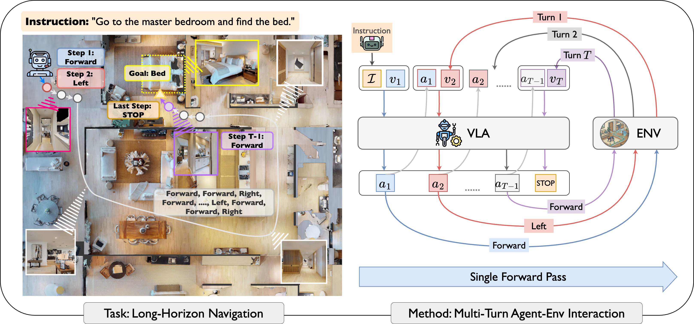
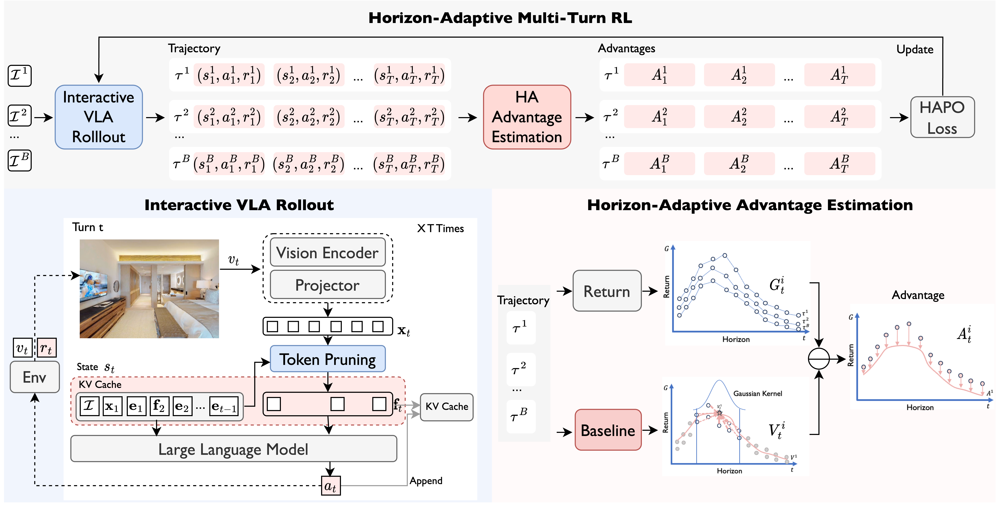

LongNav-R1 Horizon-Adaptive Multi-Turn RL for Long-Horizon VLA Navigation
University of Michigan, Ann Arbor
{huyu, axi, qxiaocs, sethgi, henryliu, ramv, maanigj}@umich.edu

LongNav-R1 formulates long-horizon navigation as a multi-turn conversation between a VLA policy and the embodied environment.
Abstract
This paper develops LongNav-R1, an end-to-end multi-turn reinforcement learning (RL) framework designed to optimize Visual-Language-Action (VLA) models for long-horizon navigation. Unlike existing single-turn paradigm, LongNav-R1 reformulates the navigation decision process as a continuous multi-turn conversation between the VLA policy and the embodied environment. This multi-turn RL framework offers two distinct advantages: i) it enables the agent to reason about the causal effects of historical interactions and sequential future outcomes; and ii) it allows the model to learn directly from online interactions, fostering diverse trajectory generation and avoiding the behavioral rigidity often imposed by human demonstrations. Furthermore, we introduce Horizon-Adaptive Policy Optimization. This mechanism explicitly accounts for varying horizon lengths during advantage estimation, facilitating accurate temporal credit assignment over extended sequences. Consequently, the agent develops diverse navigation behaviors and resists collapse during long-horizon tasks. Experiments on object navigation benchmarks validate the framework's efficacy: With 4,000 rollout trajectories, LongNav-R1 boosts the Qwen3-VL-2B success rate from 64.3% to 73.0%. These results demonstrate superior sample efficiency and significantly outperform state-of-the-art methods. The model's generalizability and robustness are further validated by its zero-shot performance in long-horizon real-world navigation settings.
Approach

LongNav-R1 treats navigation as a long-horizon, multi-turn interaction. At every step, the VLA policy conditions on the global instruction, historical observations and actions, and the current observation before selecting the next action. This preserves the sequential structure of navigation and allows online RL to optimize directly for final task success rather than merely imitating isolated expert actions.
To stabilize long-horizon learning, LongNav-R1 introduces Horizon-Adaptive Policy Optimization (HAPO), a critic-free advantage estimation method that uses horizon-aware temporal kernels to assign credit across trajectories of different lengths. This gives the policy a lightweight way to reason about which decisions matter most for final success.
Multi-Turn RL
Recasts VLA navigation as a continuous conversation between the agent and environment.
Online Exploration
Learns from rollout outcomes and encourages diverse navigation behaviors beyond demonstration replay.
HAPO
Adapts advantage estimation to varying horizon lengths for more accurate temporal credit assignment.
Results
LongNav-R1 is evaluated across real-world settings and widely used object navigation benchmarks, including HM3D V1, HM3D V2, MP3D, and OVON. The experiments show that multi-turn RL improves task-aware navigation behavior while maintaining strong generalization to unseen goals and real-world environments.
Success Rate
Qwen3-VL-2B improves from 64.3% to 73.0% with 4,000 rollout trajectories.
Multi-Turn Gain
Ablations show multi-turn RL provides a substantial success-rate improvement over SFT.
Real-World Transfer
The learned policy localizes unseen objects in long-horizon real-world navigation settings.
Simulation Videos
Real-World Videos
Citation
If you find this work useful, please cite:
@inproceedings{hu2026longnavr1,
title={LongNav-R1: Horizon-Adaptive Multi-Turn RL for Long-Horizon VLA Navigation},
author={Hu, Yue and Xi, Avery and Xiao, Qixin and Isaacson, Seth and Liu, Henry X. and Vasudevan, Ram and Ghaffari, Maani},
booktitle={Robotics: Science and Systems (RSS)},
year={2026},
note={RSS 2026, Submission 394}
}
License
This project page follows the LongNav-R1 paper and code release. Please refer to the repository for license details.